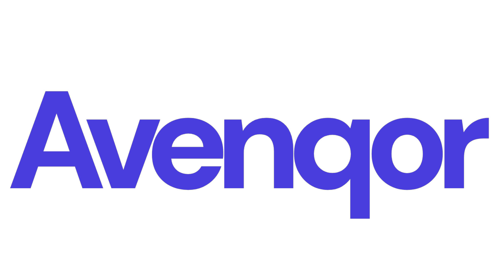
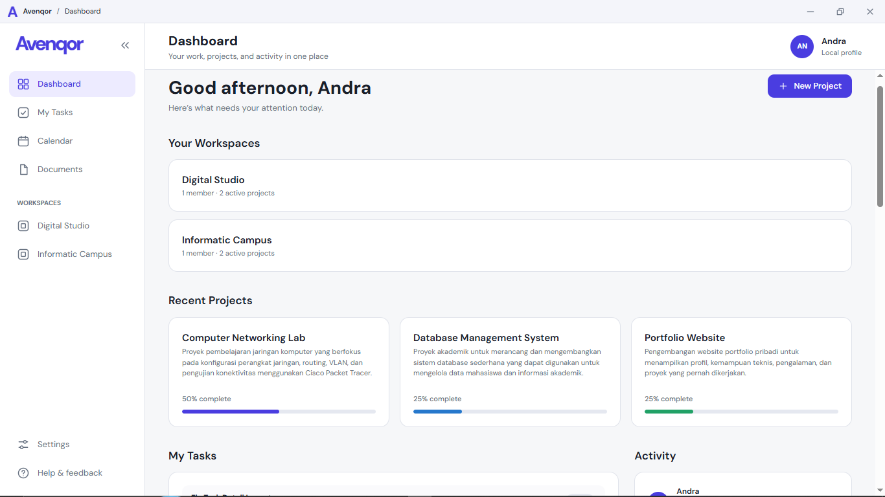
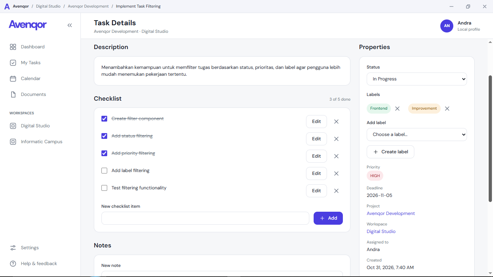
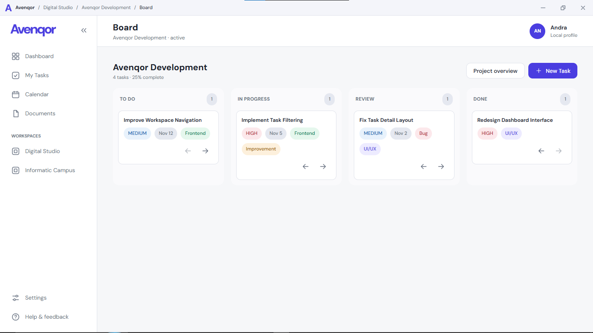
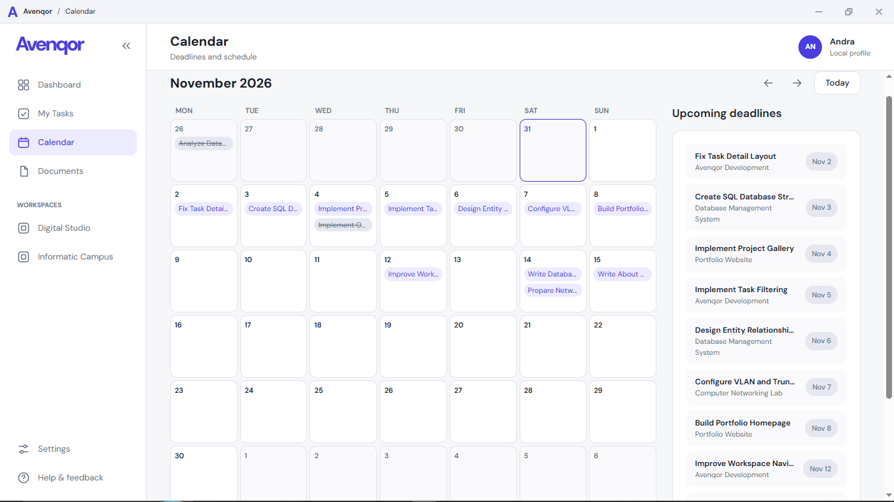
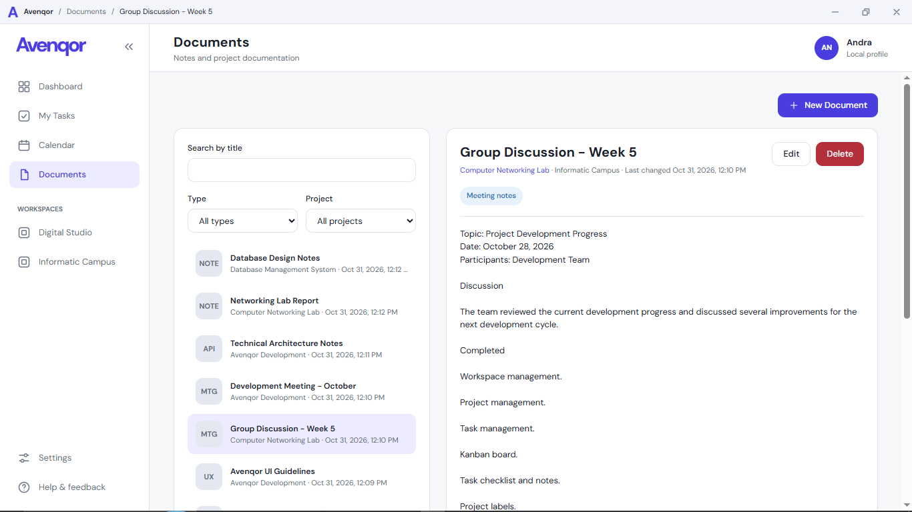
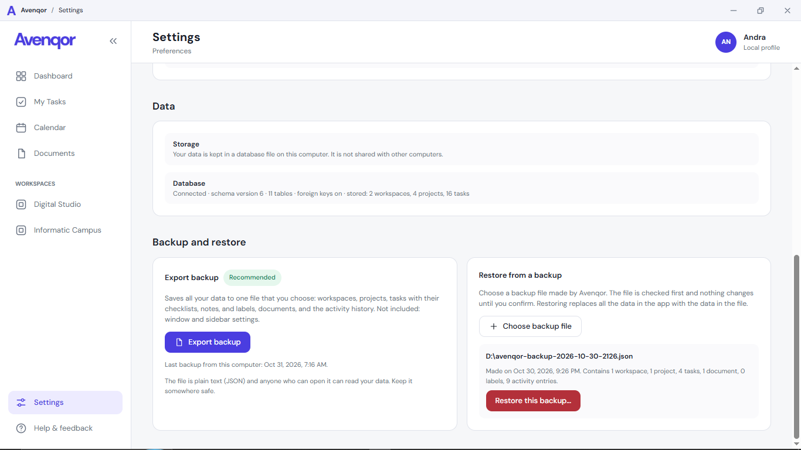

Dashboard & Workspaces
See workspaces, recent projects, assigned tasks, and recent activity at a glance. Each workspace keeps its projects and activity together.

Avenqor is a local-first project manager for organizing workspaces, projects, tasks, deadlines, and documents in one place. It is designed for students, independent developers, small development teams, and content creators who want to manage their work without an account or an internet connection.

Avenqor brings day-to-day project work into a single workspace. Its structure is simple: a workspace contains projects, and each project contains tasks with checklists, notes, labels, documents, and deadlines.
The app is built as a one-person project. The Windows and Android versions share the same codebase, while each device keeps its own local data. Avenqor does not require registration and does not send application data to an online service.
Technology Stack
See workspaces, recent projects, assigned tasks, and recent activity at a glance. Each workspace keeps its projects and activity together.

Give tasks a status, priority, and deadline. Each task can include a checklist, editable notes, and labels defined for its project.

Move work through To Do, In Progress, Review, and Done. Cards can be dragged between columns or moved with the arrow controls.

Review task deadlines in a monthly calendar, spot overdue work, and check upcoming deadlines. My Tasks gathers tasks from active projects.

Keep requirements, meeting notes, API references, and UI/UX decisions beside the project. Documents are searchable by title and filterable by type and project.

Export work data to a readable JSON backup and restore it later. Before replacing existing data, Avenqor asks for a safety backup and validates the selected file.
Avenqor stores its data in a local SQLite database. The app makes no network requests for its features, and it can be used without an account. The Windows and Android installations keep separate data, so they do not automatically synchronize with each other.
The Android build was tested on one Android phone. Behaviour may differ on other devices. Windows and Android have separate local databases.